1.JAIPUR
Rajasthan's beautiful Pink City Jaipur, was the stronghold of a clan of rulers whose three hill forts and series of palaces in the city areimportant attractions. Known as the Pink City because of the colour of the stone used exclusively in the walled city, Jaipur's bazaars sell embroidered leather shoes, blue pottery, tie and dye scarves and other exotic wares. Western Rajasthan itself forms a convenient circuit, in the heart of the Thar desert which has shaped its history, lifestyles and architecture.
Jaipur has been laid according to the conventional nine-grid pattern that astrologers believe to be lucky, and which has been recommended in the ancient Indian treatise on architecture. Each grid consists of a square, and these have been planned so that, at the heart of the city is the City Palace. Spread around it, in rows, are public buildings, the residences of noblemen, the living and trading quarters of merchants and artisans. Straight, wide roads run through the city, while a high, crenellated wall that forms its defense is pierced with seven gateways that serve as entry points. Today, these walls may be more difficult to spot since the city has grown far beyond its original plan, but they are still there, proof that though Jaipur saw no great siege, it was more than adequately prepared for it. Jaipur has much to offer visitors everything from pageants and festivals to extraordinarily clad people, a wealth of handicrafts, a royal legacy of palaces, and sightseeing that will occupy their time. However, should the visitors simply choose to walk around the streets of the old city instead, they will not regret it. All of Jaipur is an architectural gem, and no scheduled sight seeing can even hope to do justice to this rare city
Photo & Video Gallery


 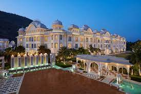
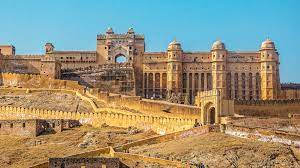
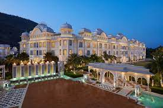
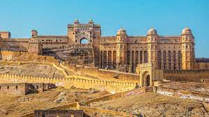
2.DELHI
Delhi is the third largest city of the world and is the second largest metropolitan with a population of as much as 13 million after Mumbai. Delhi is the present day as well as the traditional capital of India. This is one of the oldest city in India. This is surrounded by Haryana on all sides and the eastern side it is surrounded by Uttar Pradesh. Delhi is as old as 3000 BC. Indraprastha was the capital of the kingdom of the Pandavas in the Mahabharata and it is therefore also believed to be located in the same region. From the 8th till the 16th century, the Tomar dynasty ruled Delhi and they founded the Lal Kot in 736.
In the year 1180, the city was conquered by the Chaunhan kings. Mohammed Ghori defeated Prithviraj Chauhan in the year 1192. From the year 1206, the Delhi Sultanate declared Delhi as the capital. The city was later captured by a number of dynasties. In the year 1938, India was invaded by Timur Lang who ransacked the city of Delhi. In the year 1526, the Mughal dynasty was founded by emperor Babur and this happened after the first battle of Panipat. This city was conquered by emperor Shah jahan. The city was also attacked by the Marathas and later they were captured by the Persian kings. They were again conquered by the Marathas in the 18t century. In the year 1803, Marathas got defeated by the East India company.
Photo & Video Gallery
 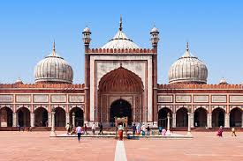
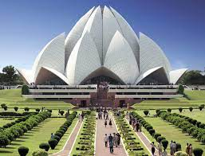
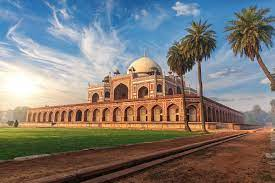
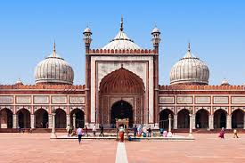
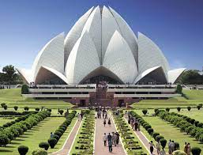
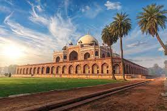

3.MYSORE
Mysore Palace also, known as the Mysore Maharaja Palace, this royal building is among the largest palaces in India, built in the year 1897, using wood. The palace is built in Indo Saracenic style with intricate craftsmanship, which looks stunning both during day time and in the evening, when the entire palace is illuminated with 98000 bulbs. This palace was once the abode of the royal family of the Wodayars.
you can visit this dazzling city during Ugadi or Dasara festival to be a part of the much awaited celebration that takes place every year in Mysore. These festivals and other cultural events represent the traditional legacy of previous time; where people participate in these events with complete devotion and belief. Some of the popular festivals that take place in the Mysore city are Dasara festival, Vairamudi festival, Ugadi festival, and Dusshera. Other attractions that you must definitely visit on your trip to Mysore are St. Philomena's Church, Melukote, The Railway Museum, Jaganmohan Palace, Jayalakshmi Vilas Mansion, Lalitha Mahal Palace, Kukkarahalli Lake, Datta Peetham, Namma Mysore, Ranganthittu Bird Sanctuary, etc.
Photo & Video Gallery
 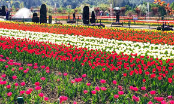
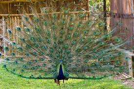
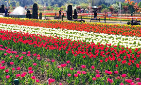
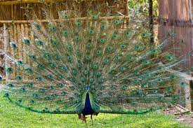
 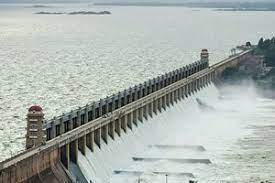
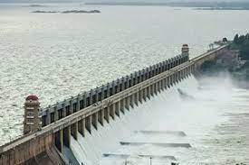
4.AGRA
The Taj Mahal looms fairytale-like from the banks of the Yamuna River. It's India’s most recognized monument and is also one of the Seven Wonders of the World. The monument dates back to 1632 and is actually a tomb that contains the body of Mumtaz Mahal—the wife of Mughal emperor Shah Jahan. He had it built as an ode to his love for her. It's made out of marble and took 22 years and 20 000 workers to complete. Words cannot do the Taj Mahal justice, its incredible detail simply has to be seen to be appreciated Location.
Agra, in the state of Uttar Pradesh, approximately 200 kilometers (125 miles) from Delhi Taj Mahotsav takes place at Shilpgram in Agra, right near the Taj Mahal, from February 18-27 each year. The focus of this festival is on arts, crafts, Indian culture, and recreating the Mughal Era. It gets underway with a spectacular procession that includes elephants, camels, and drummers. Camel rides are on offer, and there are also games for the kids and a food festival. The venue has special significance, as it's apparently located on the site where the artisans who built the Taj Mahal once lived.
Photo & Video Gallery
 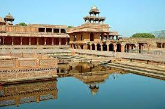
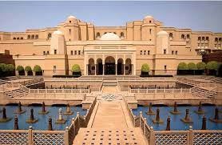
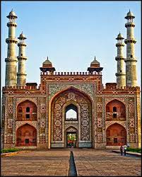
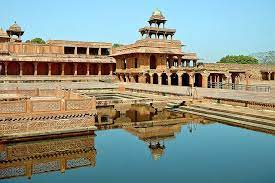
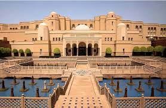
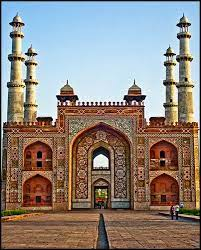
5.KERALA
Kerala, a state situated on the tropical Malabar Coast of southwestern India, is one of the most popular tourist destinations in the country. Named as one of the ten paradises of the world by National Geographic Traveler,[1] Kerala is famous especially for its ecotourism initiatives and beautiful backwaters. Its unique culture and traditions, coupled with its varied demography, have made Kerala one of the most popular tourist destinations in the world. Growing at a rate of 13.31%, the tourism industry is a major contributor to the state's economy. The state's tourism agenda promotes ecologically sustained tourism, which focuses on the local culture, wilderness adventures, volunteering and personal growth of the local population. Efforts are taken to minimize the adverse effects of traditional tourism on the natural environment and enhance the cultural integrity of local people.
The major festival in Kerala is Onam. Kerala has a number of religious festivals. Thrissur Pooram, Attukal Pongala, Beema Palli Uroos, and Chettikulangara Bharani are the major temple festivals in Kerala. The Thrissur Pooram is conducted at the Vadakumnathan temple, Thrissur. The Chettikulangara Bharani is another major attraction. The festival is conducted at the Chettikulangara temple near Mavelikkara. The Sivarathri is also an important festival in Kerala. This festival is mainly celebrated in Aluva Temple and Padanilam Parabrahma Temple. Padanilam Temple is situated in Alappuzha district of Kerala, about 16 kilometres (9.9 mi) from Mavelikkara town. Parumala Perunnal, Manarkadu Perunnal are the major festivals of Christians. Muslims also have many important festivals. Annual festival Thirayattam is conducted Sacred groves and village shrine of the south Malabar region (Kozhikode and Malappuram districts) in Kerala. "Thirayattam" is a vibrant Ethnic performing art. it is an admixture of dance,drama, songs, instrumental music, facial and body makeup, satire, martial art and ritualistic function, composed in a harmonizing manner.
Photo & Video Gallery


 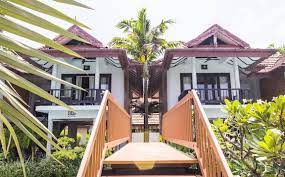
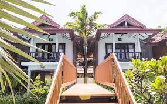